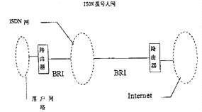
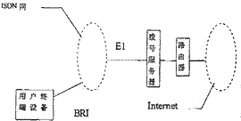
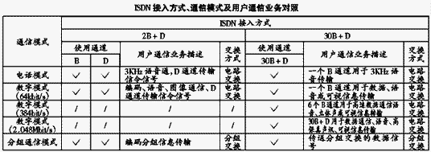
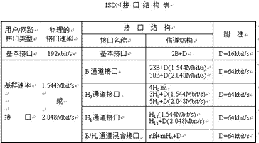
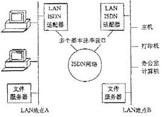
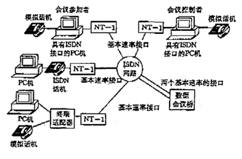
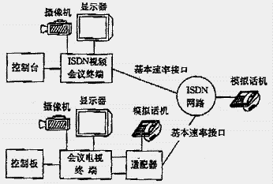

|
|
| 当前位置：电脑报电子版 > 1999 年 > 25 期 > 大众网络 > 一线通天下 |
| 《 一线通天下 》 |
ISDN简介 Integrated Service Digital Network的缩写，中文名称是综合业务数字网。“一线通”是ISDN在国内的通俗叫法，这样的称呼确实很形象，因为，在多数人印象中“一线通”就是可以在一条普通电话线上实现边上网边打电话，边打电话边发传真，同时两部电脑上网或同时使用两部电话！这对那些沉迷于“冲浪”不能自拔的网虫来说，确实是一个福音。ISDN是以电话综合数字网(Integrated Digital Network简称IDN)为基础发展成的通信网，能提供端到端的数字连接，用来承载包括语音和非语音在内的多种电信业务。用户能够通过有限的一组标准多用途用户/网络接口接入这个网络内，享用各种类型的网络服务。 ISDN主要采用两种标准的用户/网络接口：基本速率接口BRI（2B＋D）和基群速率接口PRI（30B＋D）。目前我国的ISDN线路一般为2B＋D模式，即2个基本数字通道，1个控制数字通道。 每个B通道的带宽为64Kbps，D通道的带宽为16Kbps，因此一个2B＋D连接可以提供高达144Kbps的传输速率，其中纯数据速率可达128Kbps。由于ISDN中终端与终端之间的通信是完全数字化的，因此ISDN的传送误码特性和信号失真特性比以前的模拟电话线路有了很大的改善。而且，ISDN相对于其它的一些高速接入技术来说是比较经济的，通过一对ISDN用户线最多可连接8个用户终端，可以大大节省投资。ISDN已经成为家庭办公一族最理想的选择。ISDN的申请和线路安装也比较方便，如果你家中已安装有一部普通电话，那么，只需到电信局办一个手续，你的电话线就可成为ISDN电话线（所有转换工作都在电话局内自动完成）。你也可以直接申请ISDN电话线，然后根据需要配置相应的ISDN终端，比如可视电话、TA（终端适配器）等。 ISDN是数字的多路复用线路，它分为窄带ISDN（N－ISDN）与宽带ISDN（B－ISDN）。窄带ISDN线路的传输速率为160Kbit/S（2B＋D用户线路），可以同时进行两路通话或可视电话及其它补充业务。宽带用户线上的信息传输速率为：155.52Mbit/S。ISDN一线通业务原理具有这样一些特点：（1）综合性。ISDN一线通用户只需接入网络，就可进行各种不同方式的通信业务。用户在接口上可附接多个通信终端。（2）多路性。一条ISDN可至少提供两路传输通道，用户可同时使用两种以上不同方式的通信业务。（3）高速率。ISDN一线通业务能够提供比普通市内电话高出几倍的通信速度。最高可以达到128Kbit/S，为用户上网、传输数据和使用可视电话提供了方便。（4）方便。ISDN一线通可提供许多普通电话无法实现的附加业务。如来电号码显示、限制对方来电、多用户号码等等。  ISDN发展前景 1．N—ISDN加快应用近几年，随着用户对Internet接入和对较高带宽业务需求的增长，N—ISDN市场出现转机，用户数量直线上升。据预测，N—ISDN市场继续看好，业务发展势头迅猛。自1996年以来，中国邮电总局结合全国智能网工程建设，对骨干网的交换机进行了升级改造。到目前为止，全国25个省会城市的长途交换机具备提供ISDN业务的功能；京、沪、穗3城市的国际交换机也已具备开放N—ISDN业务的功能。根据原邮电部“九五”规划，电信总局制定了我国N—ISDN建设发展目标：到2000年在全国建成一个能覆盖省会、沿海及内陆经济发达地区的N—ISDN网，向用户提供本地、长途及可通达40个国家的国际N—ISDN业务。2000年全国城市ISDN用户普及率达到2.5％。今年全国力争发展ISDN用户20万户，省会城市ISDN用户普及率达到0.5％以上。 2．B—ISDN发展方向 宽带综合业务数字网（B—ISDN），指能综合支持多种业务的宽带数字网络。B—ISDN的网络设施主要有宽带交换机、数字交叉联接设备和保护切换设备。在传输线路上，由于传输速率极高，传统的铜线已不能满足要求，只有光缆才能实现宽带业务信息的传输。实现B—ISDN的关键在于宽带交换技术。从目前发展来看，光交换技术和ATM(异步转移)技术是实现B—ISDN的重要基础。 从局域网开始推广，是我国B—ISDN市场启动的着眼点。我国大部分省（区、市）已开始建设大容量、高速率的2.5Gb/s光纤传输系统。B—ISDN及ATM宽带交换系统正在网上试验。随着帧中继业务需求的增长，更多的省市开始利用ATM交换机实现宽带网以支持帧中继商用业务，同时在网上开展多媒体业务和B—ISDN网络技术的试验。B—ISDN的全面建设需有一个过渡时期，由于对国内的用户线路进行大规模的改造，用光缆替代铜线的投资巨大，厂商现在推广的重点多限于局域网上的应用。ATM设备先以重叠网络的形式部署，在现有网络上增加宽带应用使之随业务的增长而增长。N—ISDN/ B—ISDN的互连会成为通信发展进程中急需解决的一个重要课题。传统的信息网络传输主要采用两种形式，一种是电路交换（Circuit Switching），一种是分组交换（Packet Switching)。电路交换的不足是宽带的严重浪费；分组交换的短处是系统延时的不确定性，无法支持实时业务。为了适应新业务的发展，一种结合电路交换和分组交换技术优点的传输方式，异步转移模式开发成功，实现了在一个单一的主体网络上携带各种多媒体通信业务，进行多种通信。 3．三网融合扩展了ISDN业务功能 电信网、计算机通信网和广播电视网的融合，它不仅要求考虑各种网络服务的统一，还要同时考虑网络提供者与服务提供者的统一。三网融合发展趋势也将进一步拓展ISDN终端的业务功能。 4．其他类型的高速接入技术的挑战 当然，现在ISDN也受到了来自诸如线缆Modem和xDSL（数字用户环路）等其他类型的高速接入技术的强有力挑战。线缆Modem刚刚开始兴起不久，这种Modem不同于传统的通过电话线上网的模拟式Modem，它通过有线电视网提供高速数据接入，其速度比今天最快的电话Modem快1000倍，把ISDN也远远地抛在后头。极高的传输速率是线缆Modem的最大卖点。xDSL技术则不需要专用线路，它使用普通的电话线就可以达到像帧中继和T1(传输速率可达1.544Mb/s的通讯线路)一样快的速度，而且其费用要少得多，并且易于管理。xDSL中最普遍使用的是ASDL，典型下载速度为144Kbps～1.5Mbps,最大上传速度为640Kbps。但现在两者的价格比ISDN都要高得多，而且技术标准还没有统一，尚处于试验阶段。要想真正走进主流，两者都还有很长的路要走。 ISDN与其他上网方式的比较 ISDN是通过网络互联，使用户与分组交换网中分组终端及电话网中的电话用户相连的。随着因特网及数据业务接入技术的发展，宽带ISDN已成为发展方向。ISDN与DDN、电话拨号接入方式相比，是提供端到端的数字连接，以数码方式进入通信网络，使网络内部的交换、传输统一完成。 （1） 与原有的电话拨号方式相比 ISDN提供了更有效的多样化业务服务，不仅增加了图像、图形、数据多种业务，而且可为用户提供64Kbit/s为基础的数字连接，传输速率比在电话网上利用Modem传数据的速率提高数倍以上。ISDN的通话建立很快，不像Modem那样每次有较长的时间等待过程，ISDN是数字化的，建立连接只需几秒种即可； （2） 与DDN相比 ISDN可以同时使用多个终端，在一条ISDN电话线上，可以用一条通道保持一个声音通话，用另一条通道上网； ISDN提供的64Kbit/s或128Kbit/s数据信息，比目前使用的DDN的数据信息可靠性高，而且可以同时进行数据传输和电话交谈；此外，ISDN的数据信息能力作为DDN的后备，在DDN出故障时即可自动切换成ISDN数据通信方式。因此，单位集团用户通过ISDN接入China Net最佳。 现在N—ISDN线路成本较低，技术成熟，通过一对电话线连接多个终端，提供多种业务的N—ISDN发展前景诱人。许多电话运营公司纷纷计划，改进原有的SPC交换机，加上ISDN功能，以提供基本速率和基群速率的N—ISDN业务。例如，N—ISDN用户通过一对电话线可以同时得到2个64Kbit/S的B通道和一个16Kbit/S的D通道，而目前用电话线加Modem的方法，速率最高仅为19.2Kbit/S，N—ISDN不仅速率高几倍，而且价格低得多；ISDN提供呼叫控制功能，用户可以进行呼叫管理，如呼叫转移等，N—ISDN采用标准化的接口，不存在以后与电话系统兼容的问题。 ISDN用户/网络接口技术 ISDN用户/网络接口的作用是使用户和网路相互交换信息。它是支持ISDN各种业务发展的重要技术之一。这种接口设备可视为各种终端，接入网络的通用“插座”，用户终端通过该接口进网即可实现综合多种业务的通信。ISDN用户/网络接口中有两个重要因素，即通道类型和接口结构。通道表示接口信息传送能力。通道根据速率、信息性质以及容量可以分成几种类型，称为通道类型。通道类型的组合称为接口结构，它规定了在该结构上最大的数字信息传送能力。 1．通道类型 通道是提供业务用的具有标准传输速率的传输通道。在对承载业务进行标准化的同时，需要相应地对用户/网络接口上的通道加以标准化。通道有两种主要类型，一种类型是信息通道,为用户传送各种信息流；另一种是信令通道,它是为了进行呼叫控制而传送的信令信息。根据原CCITT建议,在用户/网络接口处向用户提供的通道有如下类型： B通道：64Kbit/s，供用户信息传递用。 D通道：16Kbit/s或64Kbit/s，供信令和分组数据传输使用。 H0通道：384Kbit/s，供用户信息传递用（如立体声节目、图像和数据等）。 H11通道：1536Kbit/s，供用户信息传递用（如高速数据传输、会议电视等）。 H12通道：1920Kbit/s，供用户信息传递用（如高速数据传输、图像会议电视等）。 目前使用最普遍的是B通道。它可以利用已经和正在形成中的64Kbit/s交换网络传递语音、数据等各类信息，还可以作为用户接入分组数据业务的入口通道。 2．接口结构 标准化的ISDN用户/网络接口有两类，一类是基本速率接口，另一类是基群速率接口。 ISDN的应用 1．在局域网中的应用局域网（LAN，是一种在小区域内提供各类数据通信设备互连的通信网络）现已广泛应用于各大公司、商业和银行系统，其技术上的典型特征是数据传输速率高、性能好。但随着越来越多的公司安装局域网，用户越来越迫切希望局域网有与公用网相接的出口，使通信不局限于一个局域网的内部，能实行局域网间的相互连接，并为远程登录的用户提供高速率、高质量的服务。ISDN能为用户实现灵活的端到端数字连接，主要实现以下两种功能： （1）局域网的扩展和互连。ISDN特性使带宽可以动态分配，可提供多个远程局域网系统的互连并组成Intranet。ISDN可以在用户需要通信时建立高速、可靠的数字连接，取代局域网间的租用线路，从而大大节省了费用，ISDN还能够使主机或网络端口分享多个设备的接入。此外，本地的局域网还可以与异地的多个局域网一起构成一个虚拟网络，使得位于不同地区的局域网成为一个大型网络。局域网中的一端可以通过ISDN成为本地局域网的延伸或扩展，共享应用软件和数据库信息。 （2）提供远程局域网访问。由于ISDN提供了基本速率接口（2个64 Kbit/s数字通道）和基群速率接口（2Mbit/s） ，ISDN以电路交换方式提供用户端到端的数字连接，因而使得ISDN用户（2B＋D终端）可以很方便地实现远程局域网的访问，扩大了局域网资源（文件服务器、通信服务器、打印机、数据库等）的共享性。 2． 在电视会议中的应用 普通电视会议系统提供两个以上异地用户的声频和视频连接，用户间可进行直观的、面对面的信息交流和讨论。ISDN电视会议系统能为两个以上的异地用户建立话音桥路和数据桥路，使用户既可以进行面对面的信息交流，又可以利用数据会议的通信功能共同阅览、编辑同一个文件，共享图形和报表。会议功能的实现只需在每个会议成员的终端预先装入ISDN会议软件即可。由于ISDN具有标准的接口和灵活接入的特点，故在组织电视会议时只需用拨号方式即可灵活地、方便地将世界各地的用户连接起来。 3． 在桌面系统中的应用 ISDN应用于计算机桌面系统，使两个以上的用户通过端到端的连接进行可视文件、图像和数据图表的信息交换。尤为重要的是可进行交互式的通信，使得信息交换如同面对面的通信，特别适用于办公地点分散的公司和企业。 4．在远程教学中的应用 将声频和视频技术加入教学过程，通过能够实时交互的ISDN技术将不同地理位置的学生与老师联系在一起。 5．在远程医疗中的应用 通过ISDN在医院之间建立高速的数字通信连接，确保医院间快速传送医疗文件，诊病救人。所有远端的医生可以连到医疗技术中心，随时可就任何一个医疗项目请教专家或共享医疗信息资源，通过ISDN也可传送病人的X光片和病历等，帮助专家从远端对病情作出诊断。 6．在家庭中的应用 居家办公需要经常从各类信息库中提取最新信息和应用程序，并将工作结果以计算机文件的形式传至公司和相关计算机系统，这就要求在家庭计算机终端与远端的主机（局域网或服务器）之间建立高速通信连接。ISDN应用于居家办公除了能提供128Kbit/s的高速数据速率外，还能提供灵活的远程局域网的访问。一对ISDN线可同时提供8个终端使用，所以在一对ISDN线上除了连接ISDN数字话机外，还可通过ISDN终端适配器连接几台计算机终端、模拟话机、传真机和MODEM。此外，利用ISDN的主叫号码识别功能，在计算机终端进行一定的编程，可对呼入的电话实现有选择的接入，确保计算机终端间的通信安全、可靠、实效。 当然，随着计算机网络的迅猛发展和因特网的普及，网上交易、网上支付、网上交流等新型的电子交易方式受到普遍重视。通过ISDN路由器可很方便地建立ISP平台，提供灵活、方便、高速的端至端的数字连接。通过家庭ISDN终端可直观地查询商务行情。随着现代技术的发展，人们可在电表、水表、煤气表前装上相关接口设备，由远端的计算机读表系统通过ISDN的D通道收集各类读表数据，而不影响用户正常的B通道的通信。 7．利用ISDN实现视频信息服务 目前，我国利用电话网的语音特性，开展了许多语音信息咨询服务业务，例如人们熟知的168、160等语音信息业务。利用ISDN的图像处理功能，建立图像信息库，还可实现视频信息咨询服务。 8．ISDN商业零售点（POS）的应用 采用ISDN网络传送各种销售数据、库存和发货情况，分析市场动态、检查商业广告效果等，以提高商业零售连锁店经营效率。 POS(Point of Sales)应用也可以提供各类卡（信用卡等）的服务。POS业务可以使远地终端通过ISDN连接访问中央计算机，实现信用卡核实、供贷卡核查、医疗保险的索赔处理、银行自动取款系统、自动售票和电子转账单位。 9．接入Internet 用户可以通过64Kbit/s的速率接入Internet。这种方式速率快、效率高，目前成为ISDN的应用热点之一。 10．数字专线 ISDN也可以提供数字专线业务。国外ISDN大多用作大用户数字专线的备份电路使用。 (薛兴华) |
| 下载本期推荐软件 | 页 首 |
| 《电脑报》版权所有，电脑报网站编辑部设计制作发布 |